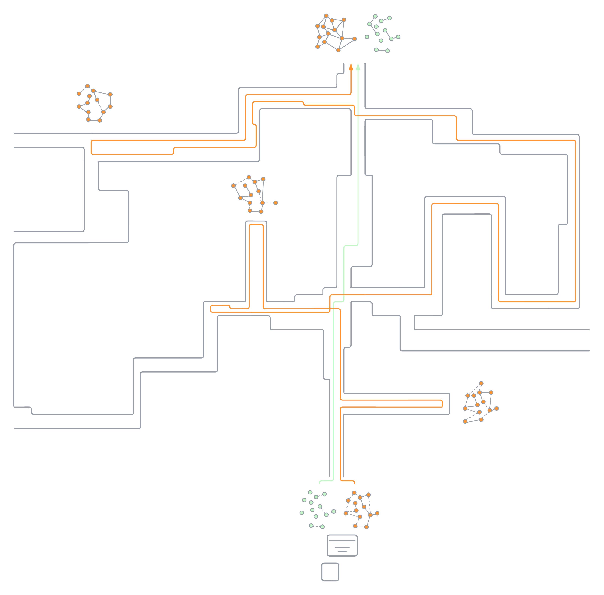

Agent Training & Control
- Self-Learning: Designed and developed the training process of two models: one that is responsible for imagining what the state of the agent would look like in the next step if it takes a specific action, and another model for determining which action should be taken in the next step to reach the target. Also integrated a curriculum learning process for both models to ensure that the agent starts learning from simple tasks first, before jumping to more difficult tasks.
- Decision Making: Implemented Behavior Cloning, Goal Conditioned Behavior Cloning, and Behavior Transformer in a simulated environment for fixed goal, changing goal, and multimodal goal settings, and analyzed/compared their behavior.
Video & Motion Prediction
- Energy Based Continual Learning: Developing an energy and optical-flow-based AI model to jointly predict future video frames and motion (optical flow) in a sequential manner from the same hidden state.
RAG & LLM Applications
- Agentic Data Assistant: Built an end-to-end agentic system with LangGraph and LangChain. Also built the backend that handles authentication, sessions, file management, and caching. Containerized the services with Docker, and deployed them on AWS. Currently integrating an evaluation pipeline with custom LLM-as-judge evaluators to assess the system from diverse perspectives.
- Brown Assistant: Built a RAG based Q&A application. Implemented document chunking, embedding-based vector indexing, cross-encoder reranking, and text generation with OpenAI API. Developed FastAPI backend and containerized the full stack with Docker/Docker Compose and deployed on AWS.
Operating Systems
- CPU Scheduler with C++: Applied the most commonly used CPU Scheduling algorithms in C++ and explained the processes/threads, scheduling process, and synchronization.
- Virtual Memory with C++: A C++ implementation of a virtual memory management system simulator. This project models various page replacement algorithms, including FIFO, Random, Clock, ESC (Enhanced Second Chance), Aging, and Working Set.
